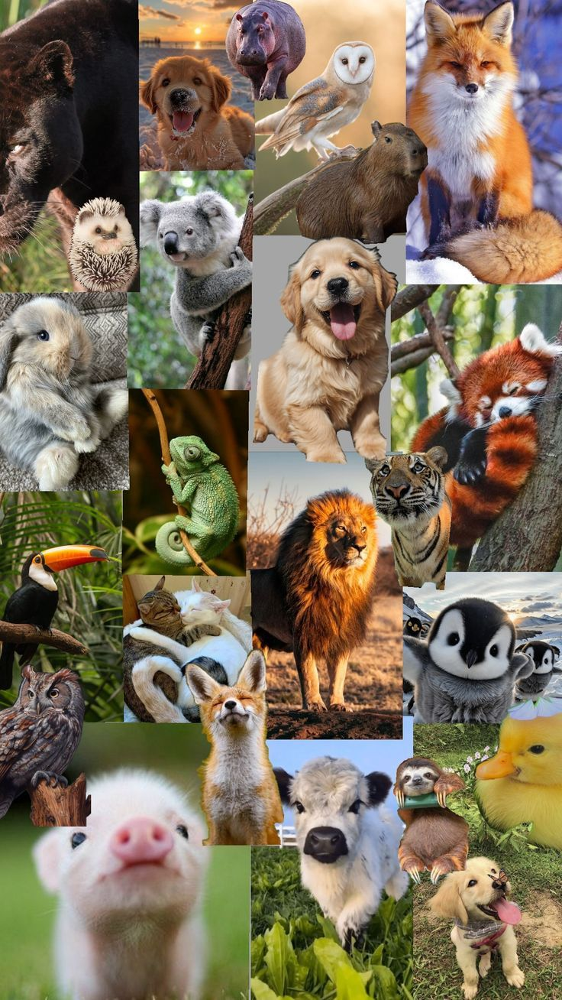
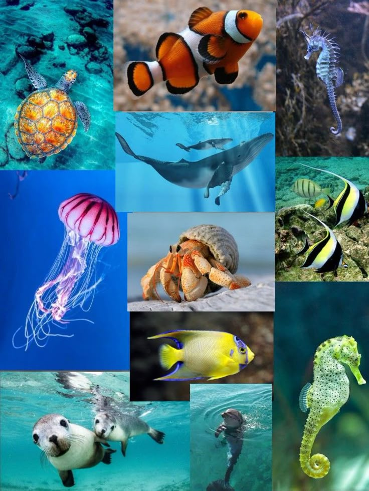

Animales Vertebrados
Criaturas fascinantes dotadas de un esqueleto interno óseo o cartilaginoso.
Ver MásEl reino animal es una de las clasificaciones más vastas y fascinantes de la naturaleza. Comprende una inmensa variedad de organismos multicelulares que comparten características esenciales como la movilidad y la nutrición heterótrofa. Para facilitar su estudio, se dividen principalmente en dos grandes grupos basados en la presencia o ausencia de una columna vertebral.

Criaturas fascinantes dotadas de un esqueleto interno óseo o cartilaginoso.
Ver Más
El grupo más numeroso de la Tierra, caracterizados por la ausencia de columna vertebral.
Ver Más